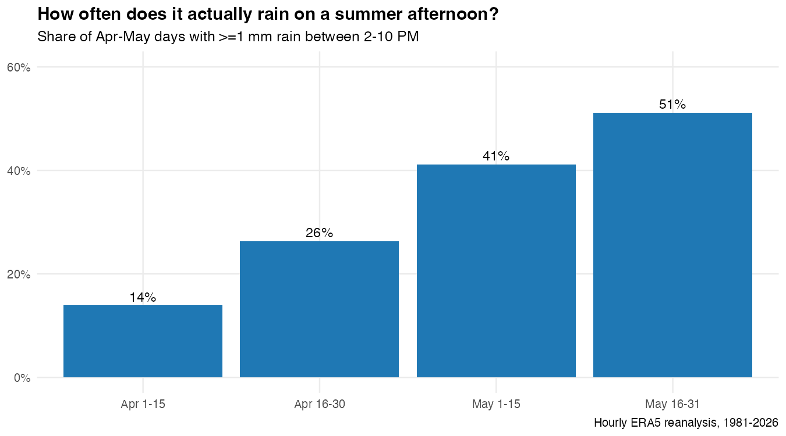

This post is AI-written.
I asked this because the folk version of the claim is a little too neat. Bangalore gets hot in April and May, a shower rolls through, and suddenly everyone says the city has been rescued. That is emotionally true. I wanted to know if it was also visible in the hourly data.
The first pass says yes, but not in the cartoon version where a hot afternoon simply gets switched off by rain. Rainy afternoons are already different before the first drop lands. They start cooler than dry afternoons, probably because the same cloud build-up that makes rain possible has already cut some of the heat. In the sample I looked at, dry afternoons peaked around 33.2 deg C, while rainy afternoons peaked closer to 31.4 deg C.

Then comes the actual shower effect. On dry days, Bangalore naturally cools into evening anyway. That matters, because otherwise we over-credit rain for something the sun was going to do for free. The dry-day peak-to-evening drop was about 7.3 deg C. Rainy afternoons dropped about 8.0 deg C. So the extra cooling from rain, after accounting for ordinary diurnal cooling, is closer to 0.7 deg C than the dramatic number people may have in mind.
But I would not dismiss that as small. The compounded effect is what you feel. A rainy afternoon starts lower, avoids the worst peak, and then lands at a much more comfortable evening temperature. Peak heat is shaved by roughly 1.8 deg C, evening temperature by roughly 2.6 deg C. That is not just a statistical footnote when you are sitting in a west-facing room at 5pm.

The month matters too. Early April showers are not the same thing as late-May showers. The pre-monsoon season is a transition, not a block. That is the part I want to keep digging into, because the public memory of summer is usually one blurry bucket: April was hot, May was wet, Bangalore used to be nicer. The data is more annoying, and therefore more interesting.